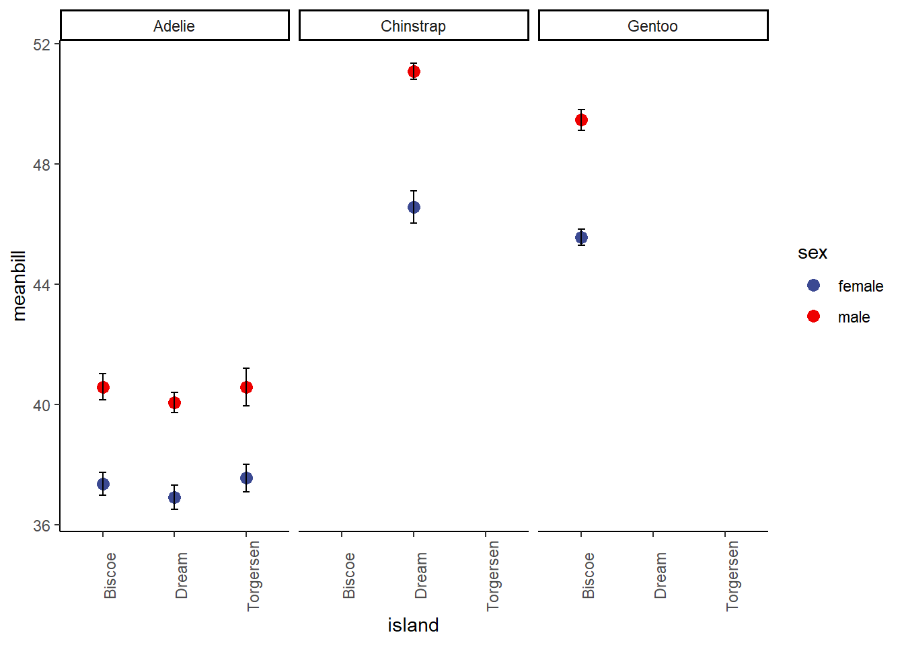

library(tidyverse)
library(palmerpenguins) #for practice data :)Stringing functions together with the pipe
How to combine functions together and build data science pipelines using Pipe syntax and Tidyverse
First, we need to load packages!
What is a pipe?
The pipe, denoted as ‘|’ in most programming languages but as ‘%>%’ in R, is used to link functions together. This is an oversimplification, but it works for our needs.
A pipe (%>%) is useful when we want to do a sequence of actions to an original data frame. For example, maybe we want to select() some columns and then filter() the resulting selection before finally calculating an average (or something). We can do all of those steps individually or we can use pipes to do them all at once and create one output.
We can think of the pipe as the phrase “and then.” I will show examples in the next section.
When not to use a pipe: 1.) When you want to do manipulate multiple data frames at the same time 2.) When there are meanginful intermediate objects (aka we want an intermediate step to produce a named data frame)
How to use the pipe
The pipe is coded as ‘%>%’ and should have a single space on either side of it at all times.
Let’s do an example with penguins. Here we will select only species and bill length and then we will filter so that we only have chinstrap penguins.
Remember that we think of pipe as the phrase ‘and then’
head(penguins)# A tibble: 6 × 8
species island bill_length_mm bill_depth_mm flipper_length_mm body_mass_g
<fct> <fct> <dbl> <dbl> <int> <int>
1 Adelie Torgersen 39.1 18.7 181 3750
2 Adelie Torgersen 39.5 17.4 186 3800
3 Adelie Torgersen 40.3 18 195 3250
4 Adelie Torgersen NA NA NA NA
5 Adelie Torgersen 36.7 19.3 193 3450
6 Adelie Torgersen 39.3 20.6 190 3650
# ℹ 2 more variables: sex <fct>, year <int>#pseudocode / logic: look at dataframe penguins AND THEN (%>%) select() species and bill length AND THEN (%>%) filter by chinstrap
pipepen<- penguins %>% #first step of the pipe is to call the orignal dataframe so we can modify it!
select(species, bill_length_mm)%>% #selected our columns
filter(species == 'Chinstrap') #filtered for chinstrap
head(pipepen) #it worked! We didn't have to mess with intermediate dataframes and we got exactly what we needed :)# A tibble: 6 × 2
species bill_length_mm
<fct> <dbl>
1 Chinstrap 46.5
2 Chinstrap 50
3 Chinstrap 51.3
4 Chinstrap 45.4
5 Chinstrap 52.7
6 Chinstrap 45.2Now we will learn how to use the pipe to do calculations that are more meaningful for us!
Grouping and summarize (average + error calculations)
The pipe becomes especially useful when we are interesting in calculating averages. This is something you’ll almost certainly be doing at some point for graphs and statistics! Pipes make this pretty easy.
When thinking about scientific hypotheses and data analysis, we often consider how groups or populations vary (both within the group and between groups). As such, a simple statistical analysis that is common is called analysis of variance (ANOVA). We often also use linear models to assess differences between groups. We will get into statistical theory later, but this does mean that it is often meaningful to graph population and group level means (with error) for the sake of comparison. So let’s learn how to calculate those!
There are three steps: 1.) Manipulate the data as needed (correct format, select what you need, filter if necessary, etc)
2.) Group the data as needed (so R know how to calculate the averages)
3.) Do your calculatiuons!
Here’s what that looks like in code form:
Let’s use mtcars and calculate the mean miles per gallon (mpg) of cars by cylinder.
mpgpercyl<-mtcars%>%
group_by(cyl)%>% #group = cylinder
summarize(mean=mean(mpg),error=sd(mpg)) # a simple summarize with just mean and standard deviation
head(mpgpercyl)# A tibble: 3 × 3
cyl mean error
<dbl> <dbl> <dbl>
1 4 26.7 4.51
2 6 19.7 1.45
3 8 15.1 2.56Now, maybe we want something more complex. Let’s say we want to look only at 4 cylinder cars that have more than 100 horsepower. Then we want to see the min, max, and mean mpg in addition to some error.
mpgdf<-mtcars%>%
filter(cyl=='4' , hp >100) %>% #filters mtcars to only include cars w/ 4 cylinders and hp greater than 100
summarize(min = min(mpg), max = max(mpg), mean = mean(mpg), error=sd(mpg))
head(mpgdf) min max mean error
1 21.4 30.4 25.9 6.363961Let’s do one more using penguins. This time, I want to know how bill length various between species, islands, and sex. I also prefer to use standard error of the mean in my error bars over standard deviation. So I want to calculate that in my summarize function.
head(penguins)# A tibble: 6 × 8
species island bill_length_mm bill_depth_mm flipper_length_mm body_mass_g
<fct> <fct> <dbl> <dbl> <int> <int>
1 Adelie Torgersen 39.1 18.7 181 3750
2 Adelie Torgersen 39.5 17.4 186 3800
3 Adelie Torgersen 40.3 18 195 3250
4 Adelie Torgersen NA NA NA NA
5 Adelie Torgersen 36.7 19.3 193 3450
6 Adelie Torgersen 39.3 20.6 190 3650
# ℹ 2 more variables: sex <fct>, year <int>sumpens<- penguins %>%
group_by(species, island, sex) %>%
summarize(meanbill=mean(bill_length_mm), sd=sd(bill_length_mm), n=n(), se=sd/sqrt(n))%>%
na.omit() #removes rows with NA values (a few rows would otherwise have NA in 'sex' due to sampling error in the field)`summarise()` has grouped output by 'species', 'island'. You can override using
the `.groups` argument.sumpens# A tibble: 10 × 7
# Groups: species, island [5]
species island sex meanbill sd n se
<fct> <fct> <fct> <dbl> <dbl> <int> <dbl>
1 Adelie Biscoe female 37.4 1.76 22 0.376
2 Adelie Biscoe male 40.6 2.01 22 0.428
3 Adelie Dream female 36.9 2.09 27 0.402
4 Adelie Dream male 40.1 1.75 28 0.330
5 Adelie Torgersen female 37.6 2.21 24 0.451
6 Adelie Torgersen male 40.6 3.03 23 0.631
7 Chinstrap Dream female 46.6 3.11 34 0.533
8 Chinstrap Dream male 51.1 1.56 34 0.268
9 Gentoo Biscoe female 45.6 2.05 58 0.269
10 Gentoo Biscoe male 49.5 2.72 61 0.348As you can see, this is complex but with just a few lines we have all of the info we might need to make some pretty cool plots and visually inspect for differences.
Some notes on the pieces of the summarize function I used up there: meanbill is just a mean() calculation. sd is just a standard deviation calculation- sd(). n=n() calculate the sample size for each group. Standard error cannot be calculated with a built in function in R (without packages that we aren’t using here) so I wrote the formula for it myself. Standard Error = standard deviation / squareroot(sample size) in other words: se=sd/sqrt(n)
PS: here’s the payoff… we can use the dataframe we just made to build a really nice plot, like the one below. You will be learning ggplot next time! NOTE: this plot is about as complex as we’d ever expect you to get. So don’t worry, we aren’t starting with this kind of plot.
Warning: package 'ggsci' was built under R version 4.2.3